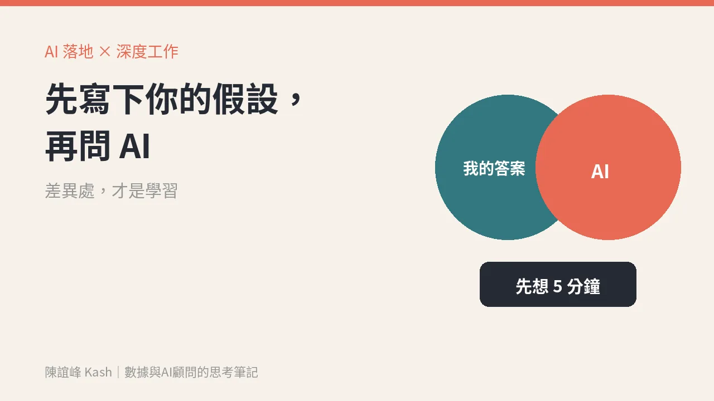

AI 讓人變笨了嗎？深度工作的 AI 版：先寫下自己的假設，再問 AI
主管最該擔心的不是不會用 AI，而是習慣先問 AI，自己不再先想。一個小規則就能把判斷力留在自己身上：重要的事，先寫下你的答案和理由，再拿去跟 AI 對照。

這週收到 Ship 30 for 30 的一封信，標題很直接：〈is AI making you dumber?〉AI 是不是讓你變笨了？
聽起來有點聳動。但他們說，越來越多寫作者、創作者和創業者告訴他們，AI 用得越多，覺得自己越「笨」。
一個研究，一個讓人不太舒服的發現
信裡引用了 MIT 媒體實驗室的一份研究〈Your Brain on ChatGPT〉。我回頭去查了原始論文。
研究找了 54 位參與者寫短文，分成三組：一組用 ChatGPT，一組用搜尋引擎，一組什麼工具都不用，只靠自己的腦袋。過程中用腦電圖（EEG）記錄大家的大腦活動。
結果，用 ChatGPT 的那組，大腦的參與程度最低。
更讓人在意的是這個：第一次寫完之後，用 ChatGPT 那組的 18 個人裡，有 15 個人沒辦法正確引用自己幾分鐘前才寫完的文章。另外兩組，各只有 2 個人有同樣的困難。
研究者給這個現象取了一個名字：「認知負債」（cognitive debt）。
要提醒的是，這是一份樣本不大的研究，量的是寫短文這個情境。它不能證明「AI 會讓人變笨」，但它指出了一件很值得注意的事：當思考是別人代勞的，那些想法就很難變成你的。
問題不是 AI，是用 AI 的順序
Ship 30 的信裡也說了，問題不在 AI 本身，而在人怎麼用它：拿它來想點子、決定自己相信什麼、寫第一版草稿。
他們有一句話我很喜歡：「You can't automate what you can't articulate.」你說不清楚的東西，就沒辦法自動化。
把這句話放到主管身上，意思是：你連自己怎麼判斷都說不清楚，就很難把判斷交給 AI，也很難看出 AI 給的答案哪裡不對。
深度工作，在 AI 時代變得更貴
Cal Newport 在《Deep Work》裡寫過一段話：深度工作的能力越來越稀有，同時在我們的經濟中越來越有價值。
這本書這週在 X 上又有不少人推薦。我覺得它在 AI 時代，有一個新的讀法。
以前，深度工作的敵人是通知、會議和社群媒體。現在多了一個更隱形的：一卡住就問 AI。
它不會打斷你，它很有禮貌，它給的答案通常也還不錯。但它會在你最需要自己想的那一刻，把那段思考拿走。
對主管來說，這段思考就是判斷力。判斷力是你被付錢的原因，也是 AI 最難取代的那一塊。
一個小規則：先寫下自己的假設，再問 AI
我的建議很簡單，只有一條規則：
重要的判斷，先花五分鐘寫下自己的答案和理由，再拿去問 AI。
具體可以這樣做：
一、先寫答案，不是先寫問題。
例如「這季該先救哪個客群的回購？」先別打開 AI，自己寫下：我覺得是某一群，因為什麼，我最不確定的是什麼。
二、再問 AI，讓它挑戰你。
把你的答案貼給 AI，請它找出你沒想到的地方，或提出另一種看法。不是請它直接給答案。
三、看差異，差異處才是學習。
AI 跟你一樣的地方，代表你的判斷有基礎。不一樣的地方，才是要停下來想的地方：是我漏了，還是它不懂我們公司的狀況？
這樣做，AI 從「替你想」變成「陪你想」。
什麼事情要套這條規則？
不是每件事都要。寫信、整理會議紀錄、做表格，直接交給 AI 沒問題。
但這幾類，我會建議一定先自己想：
- 跟客戶或團隊方向有關的決定
- 預算和資源要放在哪裡
- 你要對外說出口、要掛名負責的觀點
速度可以交給機器，判斷要留在自己身上。
週一可以先做的一件事
這週挑一個你本來會直接問 AI 的重要問題，先關掉視窗五分鐘，寫下你的答案。
然後再問。看看你和 AI 差在哪裡。
你會發現，最有價值的不是 AI 的答案，是你自己那五分鐘想出來的東西。